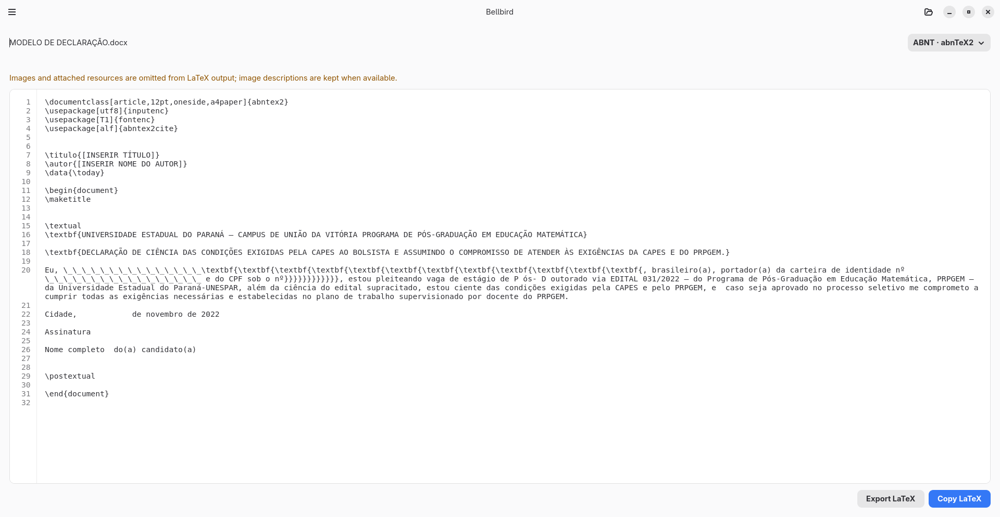
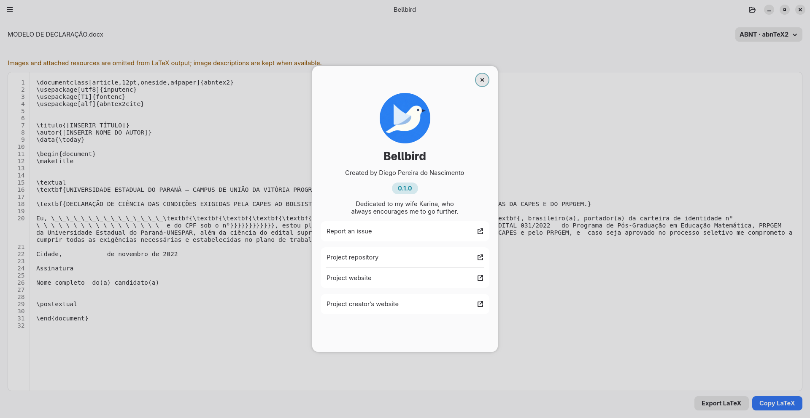

Bring your document
Open common file types, including DOCX, ODT, Markdown, HTML, and EPUB.
DOCUMENT CONVERSION · LATEX · GNOME
Bellbird turns everyday documents into readable LaTeX, with academic templates and local processing.
Version {{ site.application.version }} is available for Linux x86_64 as a Flatpak.



01 · HOW IT WORKS
Start with a file you already have and take the result into your own workflow.
Open common file types, including DOCX, ODT, Markdown, HTML, and EPUB.
Generate LaTeX for academic formats such as ABNT, IEEE, ACM, Elsevier, and Springer Nature.
Copy the result or export a .tex file for use with the tools you prefer.
02 · FORMATS
Work with familiar documents and format the result using LaTeX templates for academic writing.
SUPPORTED INPUT
ACADEMIC TEMPLATES
Bellbird generates LaTeX code. Compiling it and creating PDF files are handled by another tool.
03 · PRIVACY
Conversion happens locally. Bellbird does not require an account or an internet connection to process your files.
04 · DOWNLOAD
Bellbird {{ site.application.version }} is available for Linux x86_64 as a Flatpak.
If Flatpak is not set up on your computer yet, follow the instructions to prepare your system before installing the app.
Download Bellbird {{ site.application.version }}
05 · PROJECT CREATOR
I'm a software engineer and researcher. I created Bellbird to make it easier to turn documents into academic LaTeX, with local processing and integration with the GNOME desktop.
Visit my website